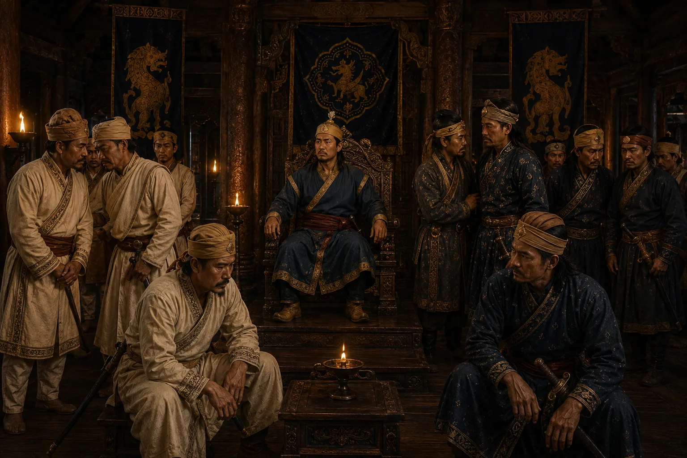

Debera Borbarua Installs and Murders the Samaguria Raja
1675 · Six kings in nine years

Debera poisons Ramdhwaj and installs Suhung as puppet monarch; when Suhung questions his authority, Debera assassinates him in 20 days.
Sources have not yet been catalogued for this record.
People: Debera Borbarua, Suhung (Samaguria Roja)